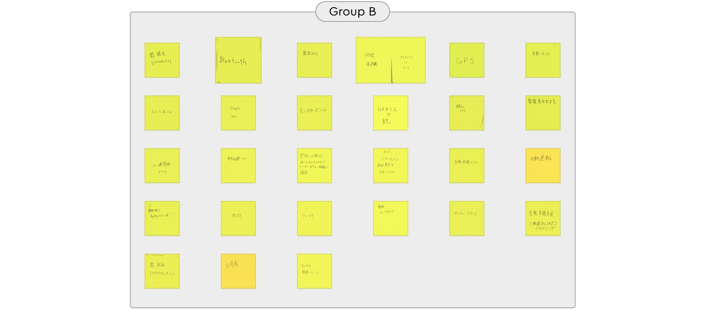
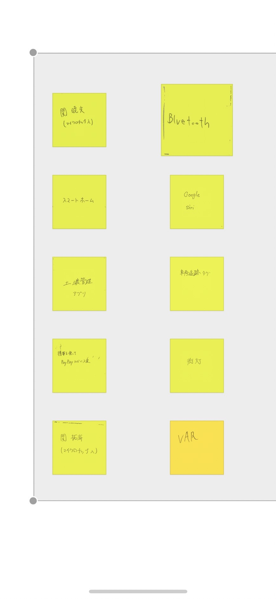
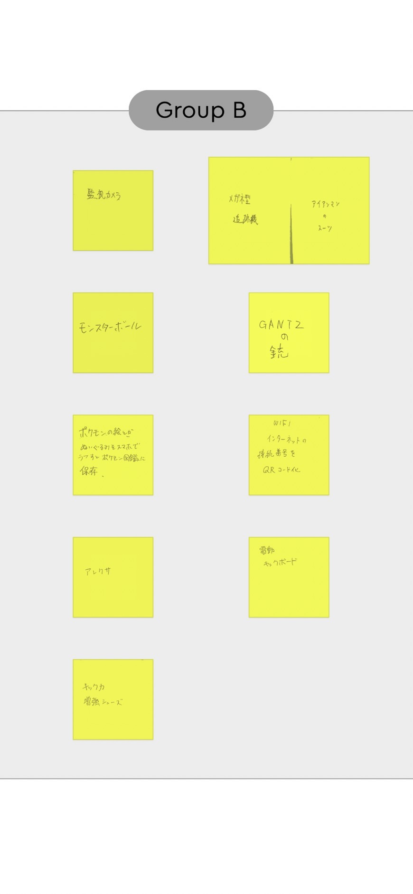
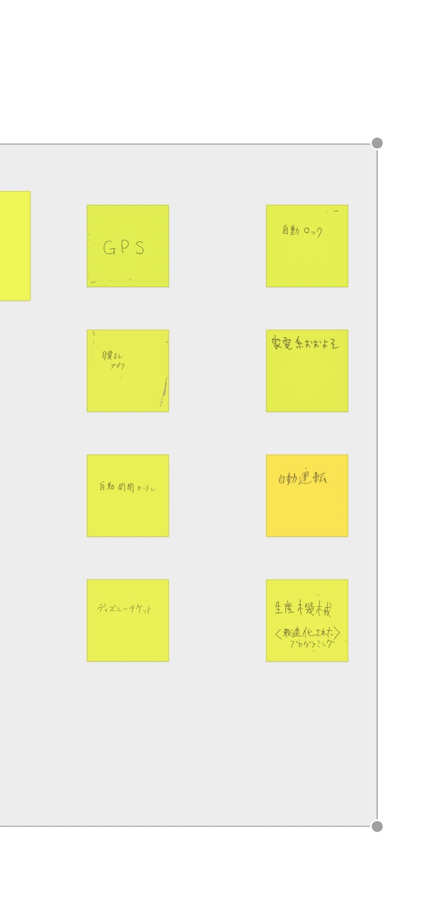
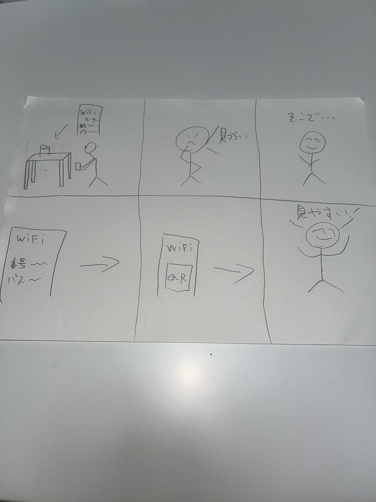
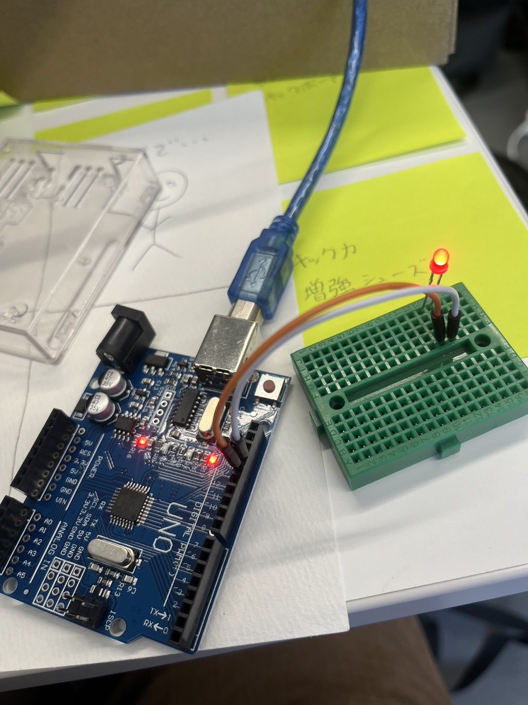

IoTに関して
1.IoTとは何か
IoT(Internet of Things)は、インターネットに接続された様々な物理的なデバイスや機器のネットワークです。
IoTデバイスは、センサーやアクチュエーターを搭載し、インターネットを通じて相互に通信し、データを収集、分析、共有することができます。
IoTは、産業、交通、農業、医療、家庭など、さまざまな分野で利用されています。
例えば、スマートホームデバイスは、家電製品を制御するために使用され、スマートシティプロジェクトでは、交通やエネルギーの効率的な管理を目的として利用されています。
IoTは、デバイスの相互接続性とリアルタイム性を活用し、よりスマートで効率的なシステムを構築することができます。
ただし、セキュリティ上の課題やプライバシーの問題なども存在するため、IoTシステムの設計や運用には注意が必要です。
2.IoTで何ができそうか？
グループした内容〈ポストイット〉

  
3.IoTで何ができそうか？
アイデアスケッチ

WiFiの番号とパスワードを手作業で入力することにだるさを感じたことがあったため、
QRコードに変換してしまえば手間が減るのではないかと考えました。
4.マイコンボード〈Arduino〉の体験
コード
void setup() {
// put your setup code here, to run once:
pinMode(13,OUTPUT);
}
void loop() {
// put your main code here, to run repeatedly:
for(int i=0; i < 10; i++){
digitalWrite(13,HIGH);
delay(300);
digitalWrite(13,LOW)
delay(300);
}
for(int i=0; i < 3; i++){
digitalWrite(13,HIGH);
delay(2000);
digitalWrite(13,LOW);
delay(2000);
}
}

プログラムは0.3秒ごとの点滅を10回繰り返し、その後2秒ごとの点滅を3回繰り返す、というプログラムで、
最後まで行くとまた0.3秒の繰り返しに戻ります。